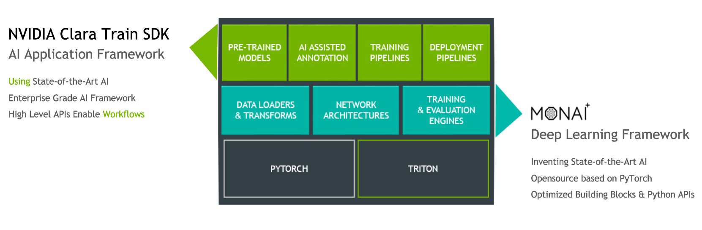
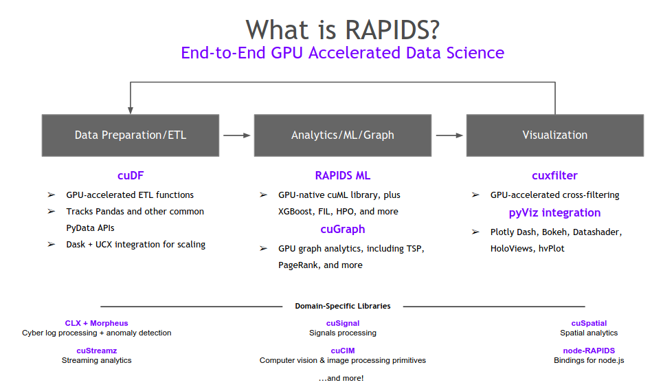
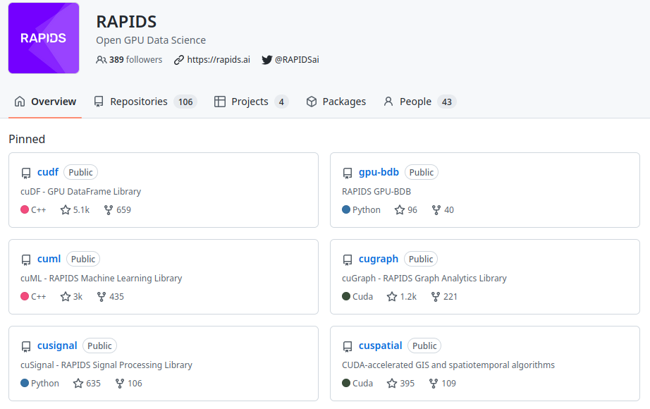
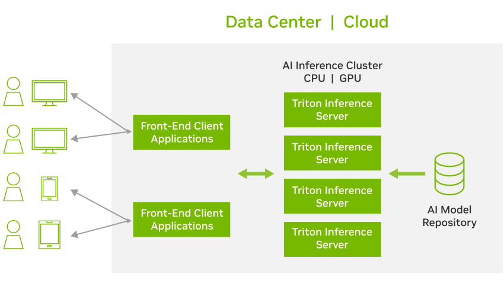
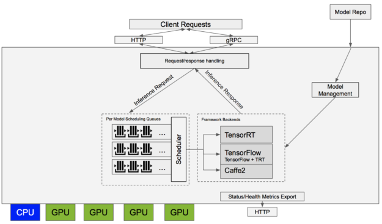
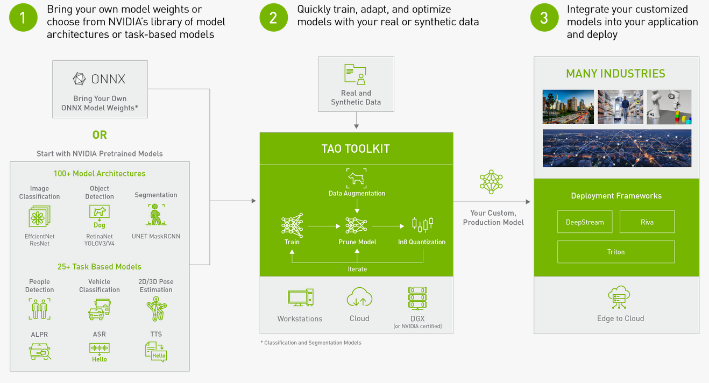
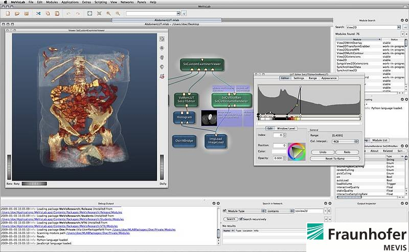
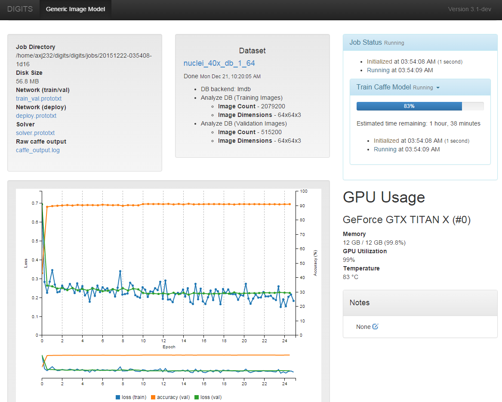

High-level frameworks
Frameworks coming with lots of pre-built tools and algorithms.
Monai

- Home
- Comprehensive framework for Medical Imaging
- Based on PyTorch
- Three packages:
- Label: for labeling and user input. For medical experts.
- Core: AI models and training. For researchers.
- Deploy: Packaging, deployment, running
NVIDIA Clara

- Home
- AI platform for medical applications, from NVIDIA, with tools and pre-trained models
- Available as container in NGC Catalog
- Applications:
- genomics
- natural language processing (NLP)
- imaging
- medical devices
- drug discovery
- smart hospitals
- Multiple modules:
- Clara Parabricks: for genomics
- Clara Train SDK: for AI models, training, pre-trained etc. Based on Monai
Libraries
Smaller, more targeted libraries.
Rapids

- Home
- Accelarate generic Machine Learning algorithms in Python, with minimal code changes, based on Cuda.

NVIDIA Triton Inference Server

Front-end ynference server to serve models remotely
Supports model backends from various frameworks: TensorRT, ONNX-Runtime, Tensorflow, PyTorch, OpenVino, pure Python, DALI, FIL (tree-based standard ML models)

Triton diagram The new Forest Inference Library (FIL) backend in Triton provides support for high-performance inference of tree-based models with explainability (SHAP values) on CPUs and GPUs. It supports models from XGBoost, LightGBM, scikit-learn RandomForest, RAPIDS™ cuML RandomForest, and others in Treelite format.
NVIDIA DeepStream

DeepStream SDK is a complete streaming analytics toolkit based on GStreamer for AI-based multi-sensor processing, video, audio, and image understanding
- AI toolkit for applications with streaming data: video, audio
- Based on GStreamer libraries, integrates with GStreamer plugins
- C++ and Python
- Can be used on Jetson edge devices (I worked personally on this)
NVIDIA Tao Toolkit

The NVIDIA TAO Toolkit, built on TensorFlow and PyTorch, is a low-code version of the NVIDIA TAO framework that accelerates the model training process by abstracting away the AI/deep learning framework complexity. The TAO Toolkit lets you use the power of transfer learning to fine-tune NVIDIA pretrained models with your own data and optimize for inference—without AI expertise or large training datasets
MeVisLab

Modular framework for image processing research and development with a special focus on medical imaging.
It allows fast integration and testing of new algorithms and the development of clinical application prototypes.
SW library and IDE
Details:
MeVisLab is a rapid prototyping and development platform for medical image processing and visualization. With its image processing library, it fulfills the following requirements:
- Able to handle large, six-dimensional images (x, y, z, color, time, user-defined).
- Offers easy ways to develop new algorithms or changing/improving existing ones in a modular C++ interface, perfect for a fast-developing research area.
- Offers easy ways of combining algorithms to algorithm pipelines and networks.
- Fast and easy integration into clinical environments due to standard interfaces, for example to DICOM.
- Fair performance for clinical routine due to a page-based, demand-driven approach in the image processing.
Beside general image processing algorithms and visualization tools, MeVisLab includes advanced medical imaging modules for segmentation, registration, volumetry and quantitative morphological, and functional analysis.
Based on MeVisLab, several clinical prototypes have been developed, including software assistants for neuro-imaging, dynamic image analysis, surgery planning, and vessel analysis.
The implementation of MeVisLab makes use of a number of well known third-party libraries and technologies, most importantly the application framework Qt, the visualization and interaction toolkit Open Inventor, the scripting language Python, and the graphics standard OpenGL. In addition, modules based on the Insight ToolKit (ITK) and the Visualization ToolKit (VTK) are available.
NVIDIA Digits

- Interactive Deep Learning GPU Training System
- Home
- Technical Documentation
- About:
- DIGITS is not a framework
- DIGITS is a wrapper for NVCaffe and TensorFlow, which provides a graphical web interface to those frameworks rather than dealing with them directly on the command-line
- Design, train and visualize deep neural networks for image classification, segmentation and object detection using Caffe, Torch and TensorFlow
- Pre-trained models from the DIGITS Model Store
- Perform hyperparameter sweep of learning rate and batch size
- Schedule, monitor, and manage neural network training jobs, and analyze accuracy and loss in real time
- Import a wide variety of image formats and sources with DIGITS plug-in
- Scale training jobs across multiple GPUs automatically
Available in NGC: https://catalog.ngc.nvidia.com/orgs/nvidia/containers/digits
Notes
- Rather old (started in 2015), might be out of touch with recent developments
- Last container version on NGC is from September 2021
PyTorch, Tensorflow, Matlab etc
- All available on the NGC Catalog
Infrastructure
Low-level technology to make all the magic run
Docker containers
In practice, mostly used for deployment / builing in isolated environments, but not necessarily day-to-day development
-

Docker vs. Virtual machines
Jupyter Hub server

- Home
- Enabling multiple users to work simultaneously on their notebooks, from client browsers
NVIDIA NGC Catalog
- Catalog of GPU-enabled Docker containers for AI
- Home
- Popular container collections:
Nvidia AI collection:
- Deep Learning Frameworks: Updated monthly, PyTorch and TensorFlow
- RAPIDS: Accelerates end-to-end data science and analytics pipelines entirely on GPUs.
- TensorRT: Takes a trained network and produces a highly optimized runtime engine that performs inference for that network.
- TAO: A python-based AI toolkit for taking purpose-built pre-trained AI models and customizing them with your own data. Add all 3 TAO containers in the entities tab.
- Triton: An open-source software to deploy trained AI models from any framework, on any GPU- or CPU-based infrastructure in the cloud, data center, or embedded devices.
- DeepStream: This SDK delivers a complete streaming analytics toolkit for AI based video and image understanding and multi-sensor processing.
- RIVA: A GPU-accelerated SDK for building speech applications that are customized for your use case and deliver real-time performance. Include RIVA Clients and RIVIA Speech skills
Misc
- Google Colab notebooks on local runtime container: